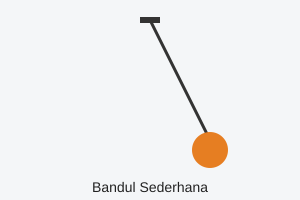

Biografi: Isaac Newton
Isaac Newton adalah fisikawan yang merumuskan tiga hukum gerak. Ia lahir tahun 1643.
Salah satu hukumnya: Setiap aksi memiliki reaksi yang sama besar dan berlawanan arah.
Hukum II Newton menyatakan bahwa percepatan sebanding dengan gaya total.
Rumusnya: F = m × a. Satuan gaya adalah newton (N), sama dengan
kg·m/s2.
- Hukum I: Kelembaman
- Hukum II:
F = m.a
- Hukum III: Aksi–Reaksi
- Contoh: roket meluncur
- Contoh: berjalan
Berita: Fisika di Sekitar Kita
Air: H2O. Percepatan gravitasi 9,8 m/s2. Bumi datar Bumi hampir
bulat.
Catatan penting: energi tidak dapat dimusnahkan, hanya berubah bentuk. Garis bawah
dipakai untuk penekanan.
v = v0 + a.t
s = v0.t + 1/2 a.t^2
Baris pertama
Baris kedua setelah tag br.
Tutorial: Menghitung Periode Bandul
- Ukur panjang tali (L).
- Simpangkan bandul dengan sudut kecil.
- Catat waktu 10 ayunan.
- Hitung periode
T = 2π √(L/g).
Periode Waktu untuk satu getaran penuh.
Frekuensi Jumlah getaran per detik
Baca juga: galeri gambar atau Wikipedia Fisika.

Gambar 1. Bandul sederhana